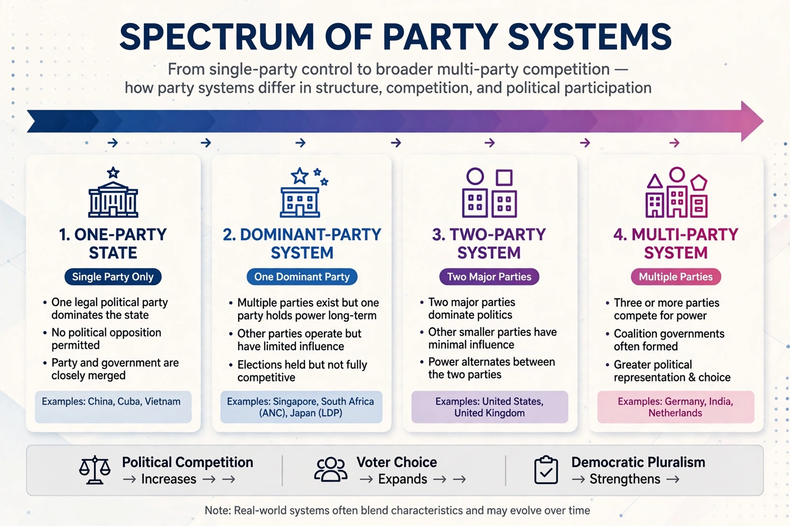

Party system
From Wikipedia, the free encyclopedia

A party system is the system of government by political parties in a democratic or authoritarian state, characterised by the number of parties that compete effectively for power, their relative sizes, and the patterns of interaction between them. Political scientists classify party systems as one-party, dominant-party, two-party and multi-party systems.
Classification
In a one-party system, a single party forms the government and others are banned or powerless, as in China or Cuba. A dominant-party system holds free elections but one party wins repeatedly — examples include Japan under the LDP, South Africa under the ANC and Singapore under the PAP. A two-party system, as in the United States and (largely) the United Kingdom, concentrates power in two major parties, while a multi-party system — common in continental Europe — typically produces coalition governments.
Theory
Maurice Duverger argued that electoral systems shape party systems: plurality voting in single-member districts tends towards two parties ('Duverger's law'), while Proportional representation encourages multipartyism. Giovanni Sartori refined the classification by ideological polarisation, distinguishing moderate from polarised pluralism. Arend Lijphart contrasted majoritarian (Westminster) with consensus democracies.
Stability and change
Party systems can remain frozen for decades around social cleavages — class, religion, language, centre–periphery — as Lipset and Rokkan argued, but they may also undergo realignment or collapse, as in Italy in the early 1990s or Venezuela after 1998. Contemporary research studies dealignment, party-system nationalisation and the rise of populist challengers.